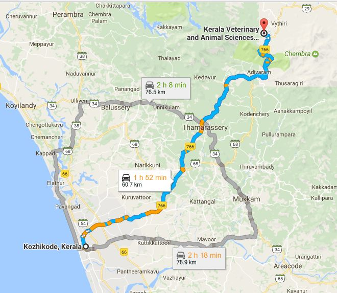

ADDRESS:
College Of Veterinary And Animal Sciences,
Pookode,
Lakkidi P.O,
Wayanad

College Of Veterinary And Animal Sciences,
Pookode,
Lakkidi P.O,
Wayanad
College Of Veterinary And Animal Sciences pookode is the headquarters of Kerala Veterinary and Animal Sciences University. It lies on the Kozhikode-Mysore National Highway NH 766 (Old NH 212) between Kozhikode and Kalpetta. Pookode is 58 km North- East of Kozhikode.
Prayer meeting:Dont have prayer meeting or contacts.
How to reach:Catch Mananthavady, Sulthanbathery or Kalpetta Bus from KSRTC Bus stand and get down at Pookode Vetinary Hospital stop.
Possibility:WIMS Can reach out to here and build contacts.